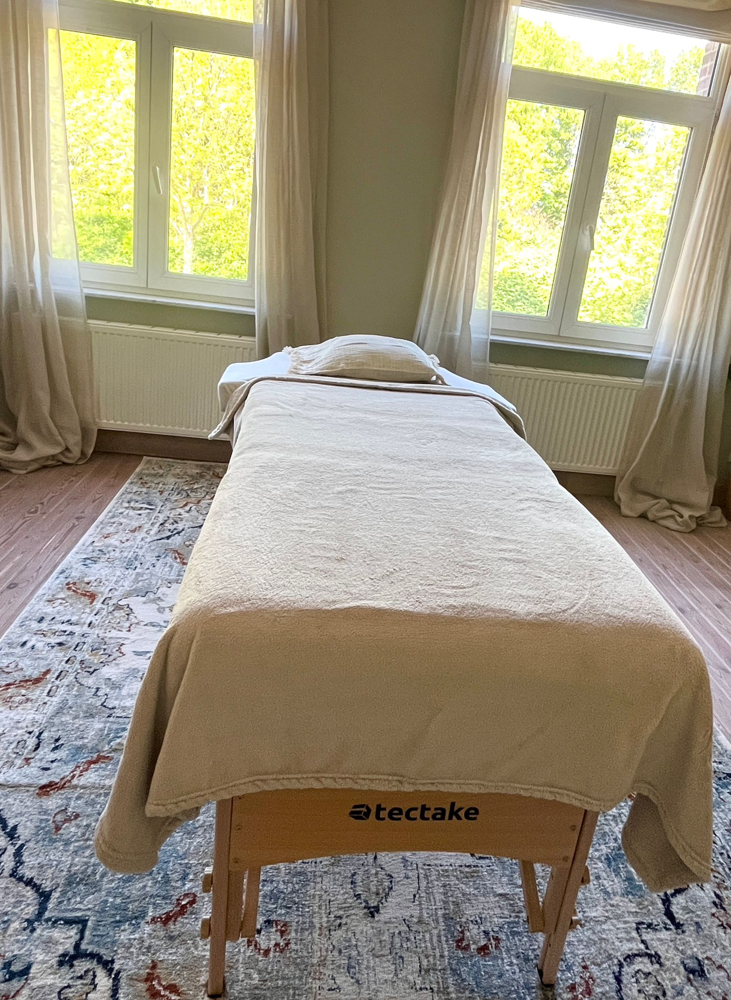

Sessions
Reiki & Somatic dance
In deze sessies ontmoet je een zachte, heldere energie. Reiki brengt je ziel tot rust, somatic dance nodigt je uit om weer in je lichaam te wonen. Samen maken ze ruimte voor diepe aanwezigheid.
Je vindt hier een helder overzicht van wat elke sessie brengt en hoe je kunt kiezen wat het beste bij jou past.

Somatic dance
Deze sessie is geen choreografie. Het is een uitnodiging om te voelen, te bewegen en zachtheid te laten stromen. Je lichaam leidt, terwijl ik een veilige, energetische bedding creëer waarin spanning kan lossen.
- Versterkt lichaamsbewustzijn
- Ruimte voor emotionele expressie
- Zachte transformatie via beweging
Reiki
Een energetische behandeling die uitnodigt tot diepe ontspanning en heling. We werken met zachte aanraking en aandacht om vermoeidheid en spanning los te laten.
- Rust in lichaam en geest
- Meer helderheid en zelfzorg
- Subtiele, zuivere energetische afstemming